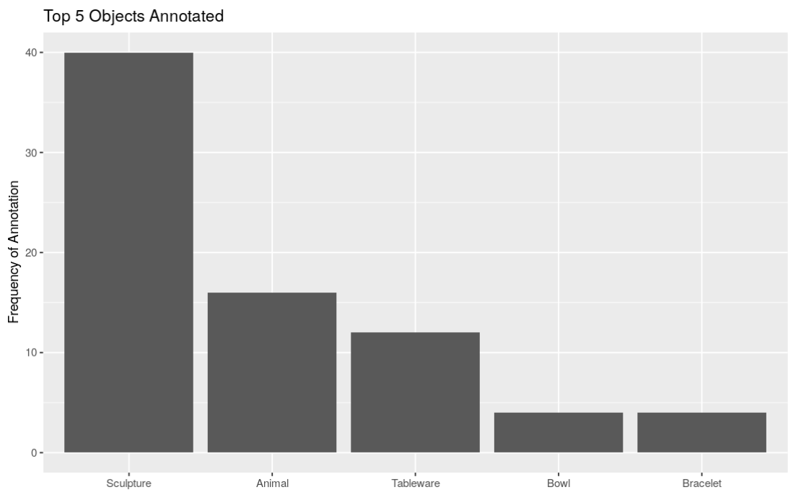
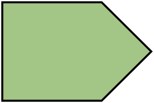
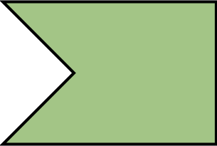
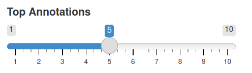
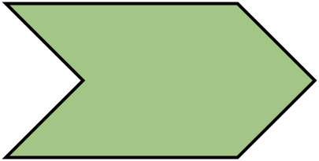
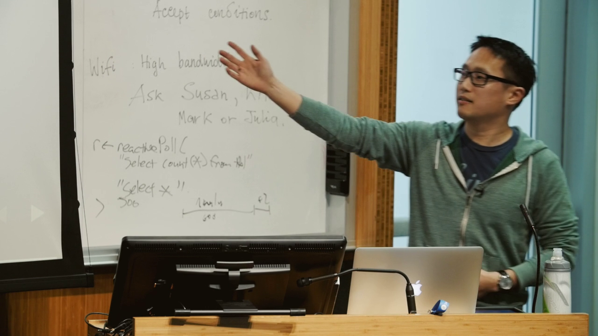

selectInput(
"dept",
"Select Department",
choices = dept_choices,
selected = dept_choices[1],
multiple = FALSE
)Windows of Reactivity
rstudio::conf(2022)
Building Production-Quality Shiny Applications
Eric Nantz
More to come
Warning
These slides are under construction and will be updated continuously until the workshop date.
Default Perspective


Default Perspective
Default Perspecive


The beginning (and end) of a typical Shiny interaction
- Can this approach scale to multiple inputs?
Default Perspective

Default Perspective
Your Turn: Exercise 1
Open the application in ex-1/app.R and see if you can improve the reactivity flow in the next 5 minutes. View more details at the Exercise 1 page.
05:00
The Middle

The Building Blocks of Reactivity
The sources used in downstream endpoints
- Not only the classic input widgets within your UI
Intermediate bridges between sources and endpoints.
- Both consume and produce
Consumers of one or more sources.
- Goal is to produce a side-effect
Your Turn: Exercise 2
Open the application in ex-2/app.R which has 2 inputs that drive the visualization. See if you can optimize the reactive calculations in the next 5 minutes.
05:00
Navigating Reactivity: {reactlog}
- Complete overhaul of Shiny’s interactive reactive flow visualization
- Powered by the
{reactlog}package - Essential for answering what (and potentially why) your app behaves a certain way
Demo Time!


Reactive
Observer
Reactive
- Use for calculations
- Lazy
- Cached
- Returns a value
- Absolutely no side effects
Observer
- Use for side effects
- Very eager
- Forgetful (no caching)
- No return value
- Only for side effects
Isn’t Lazy a ….
When constructing a Shiny app, lazy is not a bad thing for reactives!
- Only preform calculations when absolutely necessary
- Intentional design will reward you with efficient performance
Those Troublesome Observers
- Observers may cause reactive chaos in your app
- But with a little control, they can be just as valuable

Event-driven Processing
observeEvent ensures processing only happens based on a single trigger
- Button click
- Updated reactive expression
- Updated
reactiveValuesorreactiveVal
Inputs from the Server
- Users typically drive processing through the Shiny UI
- Sometimes you need to create a dynamic version that can be updated within the server-side logic
- The MVPs:
reactiveValuesandreactiveVal
Inputs from the Server
Code-Along
Code-Along 1: Building the MET image viewer foundation
More from the Reactivity Bank
bindEvent: Modify an object to support event-like triggersinvalidateLater: Use running time as a source to reactivityisolate: Prevent reactivityreq: Ensure pre-conditions are met before proceedingdebounce/throttle: Slow the reactive-roll down
Additional Resources
- Mastering Reactivity chapters from Hadley Wickham’s Mastering Shiny